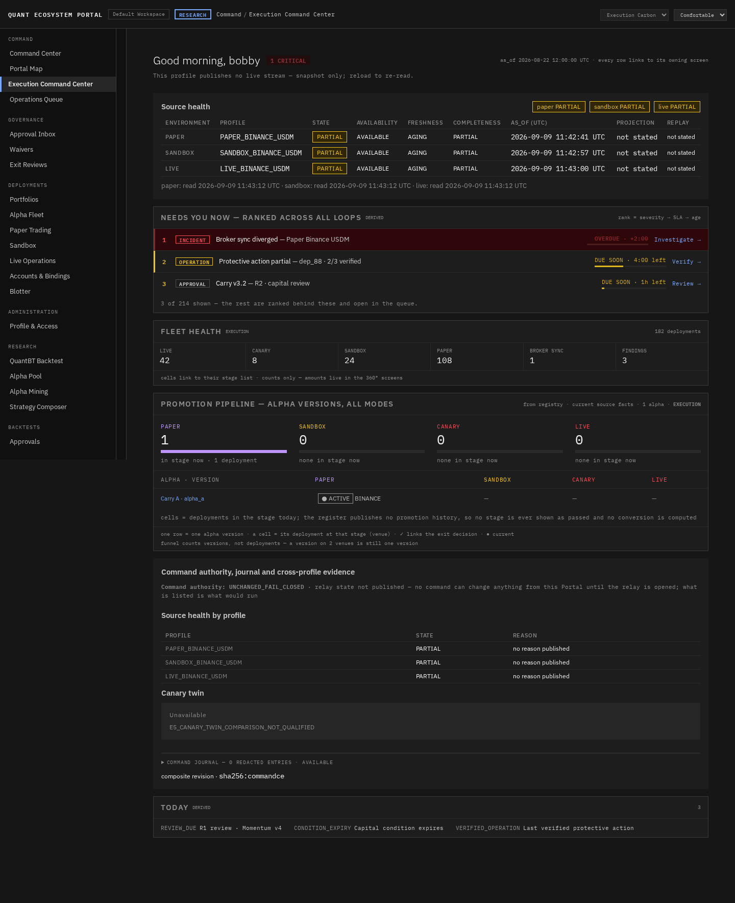

/execution — preview build, 1440px, BFF-double sample data. It shows source health, a ranked “needs you now” list, fleet counts and the promotion pipeline, but no NAV, PnL, return, drawdown, score or capital. M01 Overview is therefore new; it sits beside Command Center and reuses its ranked list. Where M01 lives (/execution or a new route) is an open decision.Fund overview
My execution overview
Fresh · as of 12s agoSource not qualified 1 USDT · real-funded2Net asset value
1,248,330.12 USDT
Not availableSource not qualified
Net PnL · 30D
+84,210.55
Not availableFees & funding not complete
Return · 30D 3
+7.2%
Modified-Dietz, not TWRNot availableMethod not certified
Drawdown
−2.1% max −6.8%
Not availableNeeds NAV series
Portfolio score 4
72 Provisional
Not availableScore policy pending
Performance 5
Chart · cash-flow markers (▲ added · ▼ returned) are separate from profitNo series published yet — nothing to draw
Capital 6
| Initial funds | 1,000,000.00 | — |
| + Added funds | 120,000.00 | — |
| − Returned capital | 0.00 | — |
| Net external flows | 1,120,000.00 | — |
| Current NAV | 1,248,330.12 | — |
| Budget approved / used | 1,100,000 / 842,300 | — |
By funding source (Initial vs Added)
Not available — no approved per-source attribution. Profit is never split by deposit date.
Performance statement every requested row, with its method 7
| Measure | Value | Basis / method | Status |
|---|---|---|---|
| Current total | 1,248,330.12— | NAV, selected valuation basis | CompleteUnavailable |
| Profit amount | +84,210.55— | Net, realized + unrealized, after fees/funding | PartialUnavailable |
| Total PnL % | +7.2%— | Modified-Dietz (not TWR) | Method labelledUnavailable |
| Realized / Unrealized % | +5.1% / +2.1%— | Denominator declared per row | PartialUnavailable |
| Drawdown (current / max) | −2.1% / −6.8%— | Window 30D; since-inception ATH on hover | CompleteUnavailable |
| Portfolio score | 72— | Direct score on NAV path, version v1.1 | ProvisionalUnavailable |
| Alpha score (weighted) | 68— | Weighted by allocated funds | Coverage 83%Unavailable |
Needs attention 8
INCIDENT Broker sync diverged · Binance-02
Overdue +2:00 · Investigate →
OPERATION Recall pending · Portfolio Core
Due in 4:00 · Verify →
Nothing can be evaluated until the source is ready.
Contributors 9
| BTC-Trend v3 | +21,430 |
| ETH-Mean v2 | +12,980 |
| … bottom | −4,120 |
Not available.
My alphas
| Alpha / version | Stage | Allocation | Net PnL | Health |
|---|---|---|---|---|
| BTC-Trend v3 | Live · Paper | 120,000 | +21,430 | OK |
What changes vs today — Overview (nearest today: Execution Command Center, /execution)
| Region | Today (V1, from the screenshot) | Proposed | Why · needs backend | |
|---|---|---|---|---|
| NEW | Headline KPIs (NAV, Net PnL, Return, Drawdown, Score) | None. Command Center shows counts and queues only | One hero NAV tile + four secondary tiles for the selected environment | Manager dataset `current_nav`, `net_pnl`…; today most are unavailable (source not qualified), which the sparse state designs for. |
| NEW | Performance chart, Capital statement, Performance statement | None at fund level | Chart with flow markers, cash-flow capital list, every row of the lowfi with method + status | Chart needs a manager time-series (FE-013). No Net external flows field exists; shown only if published. |
| NEW | Environment switch Live / Paper / Sandbox + partition chip | Environment appears only as table rows in Source health | Segmented switch; money stays within one partition | Backend requires one environment; no combined “All”. |
| CHANGED | Needs attention | The page itself: “Needs you now”, ranked by severity → SLA → age (incident, operation, approval) | One panel; keeps the rank and the SLA/overdue wording | The ranked list is good; it just stops being the whole screen. |
| CHANGED | Source health | A full table (state, availability, freshness, completeness, as_of, projection, replay) for 3 environments | One freshness chip in the header; the table moves to a “Data sources” disclosure | Same facts, less noise for web users. |
| CHANGED | Fleet health counts, Portfolios | Counts per stage (Live 42, Canary 8…) and broker sync / findings | Portfolios mini-table with NAV, return, health; stage counts live in Alpha Fleet tabs | Needs Portfolios directory (FE-014). |
| KEPT | Command Center, Promotion pipeline, Operations queue | Own routes and screens | Untouched; M01 links to them | Existing triage and pipeline remain. |
| REMOVED | Greeting line and “snapshot only; reload to re-read” sentence | “Good morning, bobby · 1 CRITICAL”, explanatory copy | Title plus freshness chip; critical count appears inside Needs attention | Less chatter. |